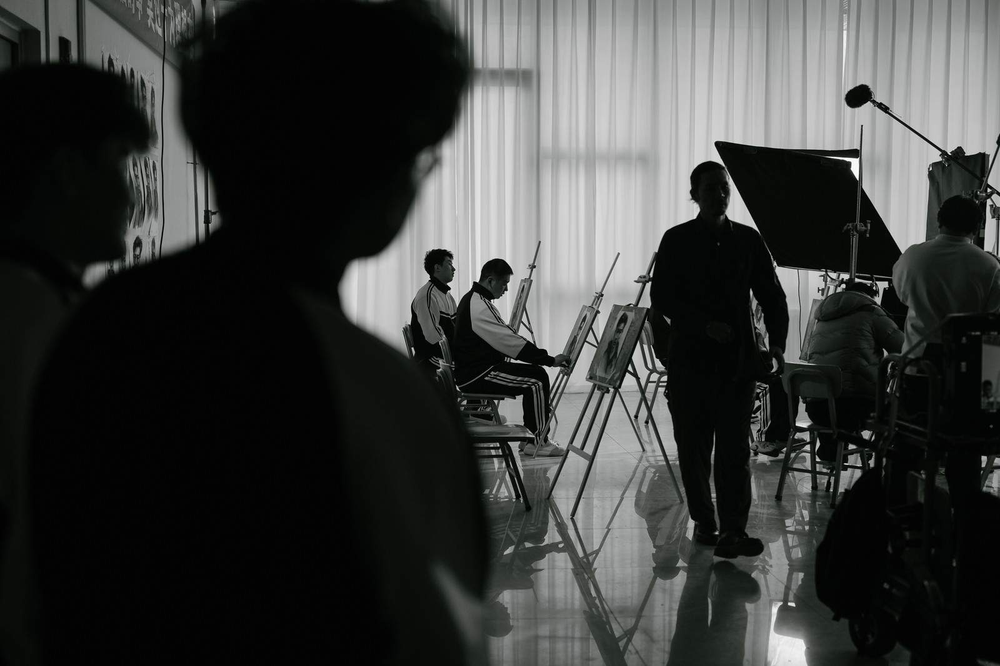
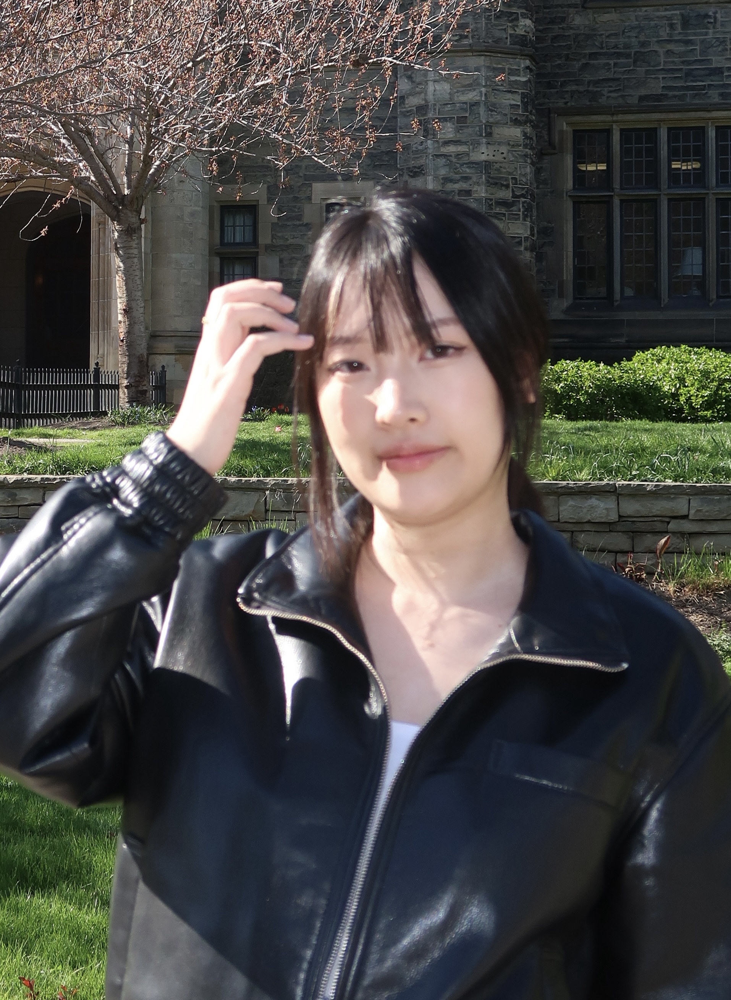
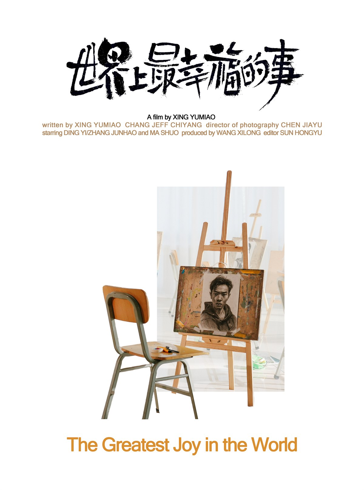

Bio
Yumiao Xing is a Chinese filmmaker based in New York, Toronto, and Zhengzhou. She studied Cinema Studies, Art History, and Visual Studies at the University of Toronto and Film Directing at the School of Visual Arts.

Short Film
The Greatest Joy in the World
Mengting (17), a high school girl who loves drawing, enters a high-intensity standardized art training camp, where she struggles to survive.
Stills/BTS
Contact